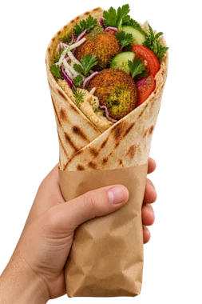
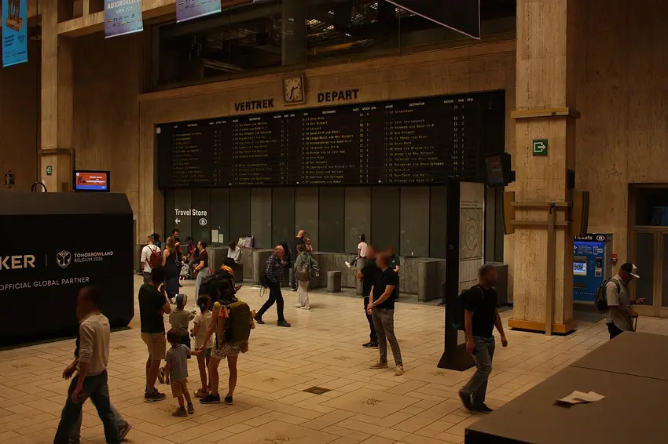
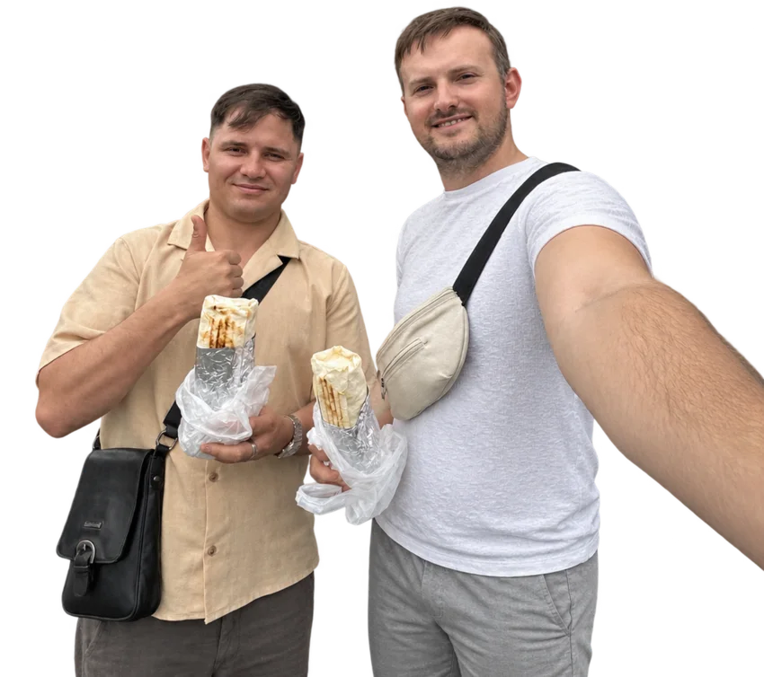

D’abord, le poulet
Nous grillons le poulet mariné, puis le déposons sur le lavash avec les légumes frais et la sauce.
Des sauces maison et une fine galette de lavash dorée au gril.
Un goût d’Ukraine au cœur de Bruxelles.
Du poulet mariné, des légumes croquants et nos sauces maison dans un lavash que nous faisons dorer au gril.


Poulet grillé, chou, tomate, concombre et sauce au yaourt et à l’ail dans un lavash de blé.

Double portion de poulet grillé, mêmes légumes frais et sauce au yaourt et à l’ail.

Le poulet, les légumes et la sauce au yaourt et à l’ail de la Classique dans un petit lavash.

Falafels, houmous au tahini, chou, concombre, tomate et herbes fraîches. Lavash sans lait ni œufs.
Dans le train ou à la maison. L’emballage tient dans une main. Le papier aluminium garde le chawarma au chaud sur le trajet du retour.
Nous grillons le poulet mariné, puis le déposons sur le lavash avec les légumes frais et la sauce.
Un bref passage sous le gril de contact dore le lavash et préserve le moelleux de la garniture.
Chaque portion chaude est enveloppée dans du papier aluminium et remise au voyageur.

Depuis le passage, les voyageurs voient l’enseigne et la photo du chawarma avant d’arriver au comptoir.
Une seule carte présente les quatre recettes, leurs prix, les portions et les garnitures.
Le papier aluminium et l’étui permettent de tenir le chawarma d’une main et la valise de l’autre.


Nous travaillons déjà dans la restauration en Belgique. Au quotidien, nous veillons à la qualité des plats, à la propreté de la cuisine et à l’accueil de chaque client.
Expérience en cuisine et dans l’organisation du service au quotidien.
Nous avons accompagné l’ouverture du restaurant, de l’achat des équipements à la création de la carte, en passant par la mise en place des approvisionnements.
En Ukraine, nous avons longtemps servi une clientèle de passage près des stations de métro. Notre formule s’adresse aux voyageurs qui disposent de quelques minutes avant le départ.
Nous marinons le poulet, préparons nos sauces et faisons dorer chaque lavash. Le Mini convient à une petite faim et le Double à un déjeuner copieux.
Nous avons choisi un gril de contact pour limiter les odeurs de cuisson. Nous prévoyons des zones distinctes pour les produits crus et cuits ainsi qu’un nettoyage régulier pendant le service.
Le chawarma ukrainien chaud complète l’offre de sandwichs belges, burgers, gaufres et viennoiseries.

Nous réceptionnons les livraisons, vérifions les stocks et préparons les légumes et les postes de travail.
La prise de commande, la cuisson et la remise des plats sont réparties entre les équipiers. Nous prévoyons une carte en français et en néerlandais, avec un accueil également en anglais.
Nous nettoyons le gril et les plans de travail, vérifions les stocks et passons les commandes pour le prochain service.


Une carte courte facilite le choix aux heures de pointe. Des saveurs familières et un service régulier donnent aux voyageurs une raison de revenir.
Une devanture sobre, une enseigne lumineuse et des touches de bois. Les matériaux et l’éclairage seront convenus avec la SNCB.
Nous nous engageons à respecter les horaires convenus, à prendre soin des installations de la gare et à laisser le passage libre.
Nous vérifierons la puissance électrique, la ventilation, l’eau et les évacuations avant de convenir de la façade et de chiffrer les travaux.
Nous installerons le gril de contact, les réfrigérateurs et les éviers. L’équipe s’entraînera à la préparation, à la remise des commandes et au service en période de pointe.
L’objectif prévisionnel est de trois à six semaines après la remise du local. La date sera convenue avec la SNCB après la visite et la validation des travaux.